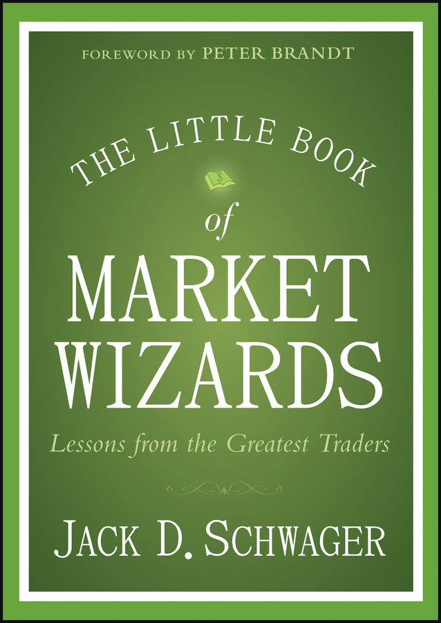

By Jack D. Schwager · 2014 · 182 pages
Peter Brandt, a trader who has lived off trading profits since 1981, writes the foreword. He reads the Market Wizards series every Christmas break alongside The Bourne Trilogy—Bourne for entertainment, Market Wizards for mental preparation for the coming year of market combat. Brandt compares the series to Edwin Lefèvre’s Reminiscences of a Stock Operator, predicting it will remain just as timely eighty years from now. His core belief, distilled from decades of trading and reinforced by every reading of these interviews: consistently profitable traders share exactly two things—an approach that reflects their unique personality, and aggressive risk management. Everything else is secondary. Brandt dismisses the trading system marketers who promise seventy to eighty percent win rates, noting that most of them are not successful traders themselves. The secret to profitable trading is not in the entry signals.
In the preface, Schwager frames the book as a distillation of twenty-five years of interviews with fifty-nine of the world’s best traders across four Market Wizards books spanning a quarter century. He is clear about what the book is not: it is not a how-to manual, not a collection of formulas or recommendations. Too many aspiring traders seek a formulaic treatment while missing concepts essential to success regardless of methodology. Different readers consistently cite different interviews as their personal favorites, suggesting that the lessons are filtered through individual personality and experience.
Perhaps the most surprising insight in the preface is Schwager’s claim that the principles of trading success apply broadly to success in any endeavor. He recalls giving a talk on trading success when a minister in the audience approached him afterward: “I am a minister, and I was fascinated by how many of the points you made were also critical to my success in building a congregation.” Schwager suspects these are common principles of success that he simply discovered through the lens of trading.
Schwager opens with a story that has nothing to do with markets. On April 15, 1959, Bob Gibson played his first major league game as a relief pitcher for the Cardinals. He gave up a home run to the very first batter he faced—an ignominy suffered by only 65 pitchers in the entire history of baseball. In the next inning, he gave up another home run. The following evening he was hit hard again. Two nights later he gave up a double with two outs and runners on. He was benched for a week and sent back to the minors.
Despite this catastrophic beginning, Gibson became one of the twenty greatest pitchers of all time: seventeen seasons, 251 wins, 3,117 strikeouts, a 2.91 career ERA, an unbelievable 1.12 ERA in 1968 (the lowest since 1914), two Cy Young awards, two World Series MVPs, nine All-Star selections, and first-ballot Hall of Fame induction. The lesson is simple and powerful: initial failure tells you nothing about ultimate potential.
The same pattern holds in trading. Michael Marcus was enticed into futures as a college junior. He hired an adviser named John for thirty dollars a week who lost money on every trade. John’s brilliant idea—a “can’t-lose” pork belly spread—nearly wiped out Marcus’s account because August pork bellies were not deliverable against the February contract, something neither of them knew. Marcus scraped together another five hundred dollars and lost that too. Then he cashed in the three thousand dollars of life insurance left by his father, who had died when Marcus was fifteen.
By sheer luck, 1970 was the year of the corn blight. Marcus turned three thousand into thirty thousand on a newsletter recommendation. Emboldened, he borrowed twenty thousand from his mother, combined it with his profits, and used the entire fifty thousand dollars to buy the maximum number of corn and wheat contracts on margin. The blight theory proved wrong. The corn market locked limit down and Marcus stood paralyzed, losing his entire thirty thousand plus twelve thousand of his mother’s money. His response was to keep going.
I would look up and say, “Am I really that stupid?” And I seemed to hear a clear answer saying, “No, you are not stupid. You just have to keep at it.” So I did. — Michael Marcus
Marcus eventually took a job at Commodities Corporation, which funded his account with thirty thousand dollars and later added another hundred thousand. In roughly ten years, he turned those modest allocations into eighty million dollars—with the firm withdrawing as much as thirty percent of his profits in many years to cover expenses.
Tony Saliba provides perhaps the most emotionally devastating version of this pattern. Staked with fifty thousand dollars as a clerk on the options floor, Saliba went long volatility spreads and ran the account to seventy-five thousand in two weeks. He thought he was a genius. What he did not realize was that he was buying options at inflated premiums following a period of extreme volatility. When the market went sideways, volatility collapsed and his account dropped to fifteen thousand. Saliba described the despair in terms that went beyond financial loss: he would have traded places with the victims of the 1979 DC-10 crash at O’Hare. But he persisted, sought advice from experienced brokers who taught him discipline and conservative position sizing, and eventually put together a streak of seventy consecutive months with profits exceeding one hundred thousand dollars.
Schwager draws two lessons. First, failure is not predictive—even repeated failure at the start is the norm for future Market Wizards. Second, persistence is instrumental. Most people facing losses like Marcus’s or Saliba’s would have quit. Were it not for relentless persistence, many of these traders would never have discovered their ultimate potential. The practical implication is that novice traders should start with small amounts of capital, since they are essentially paying for their market education.
Before considering what is important to trading success, Schwager starts with what is not: the specific methodology. Many aspiring traders believe success lies in discovering some secret formula or system that explains and predicts price moves. This belief is fundamentally misguided. There is no single correct methodology. Schwager proves this by contrasting two traders with diametrically opposed approaches.
Jim Rogers co-founded the Quantum Fund with George Soros in 1973, building one of the most successful hedge funds in history. Rogers is a pure fundamentalist with a genius for anticipating major macro trends. In 1988, with gold declining for eight years, Rogers predicted the bear market would continue for another decade—it lasted eleven more years. He predicted the Japanese stock market would collapse eighty to ninety percent, a forecast that seemed preposterous at the time but proved almost exactly right as the Nikkei lost roughly eighty percent over the next fourteen years. When Schwager asked Rogers about technical analysis, his contempt was absolute: “I haven’t met a rich technician.” When Schwager tried to explain the term “reversal,” Rogers cut him off: “Don’t tell me. It might mess up my mind.”
Marty Schwartz, on the other hand, ran a forty-thousand-dollar account into over twenty million dollars while never realizing a drawdown of more than three percent on a monthly basis. He entered ten public trading contests and won nine of the four-month contests with an average nonannualized return of 210 percent. In his single one-year contest, he scored 781 percent. Schwartz had been a securities analyst for nearly a decade before switching to full-time technical analysis trading. His response to Rogers was withering: “Absolutely. I always laugh at people who say, ‘I’ve never met a rich technician.’ I love that! It is such an arrogant, nonsensical response. I used fundamentals for nine years and got rich as a technician.”
There is no single market secret to discover, no single correct way to trade the markets. Those seeking the one true answer to the markets haven’t even gotten as far as asking the right question, let alone getting the right answer. — Jack Schwager
Both Rogers and Schwartz succeeded spectacularly, and both view each other’s methods with complete disdain. The dichotomy proves that market success is not about finding the “one true” methodology. There are many ways to succeed—some traders hold positions for months or years, others for minutes. The challenge is finding the approach that is right for you.
If there is no single correct methodology, then the essential task is finding one that fits your personality. Schwager considers this the single most important principle in the book. Every successful trader he has ever interviewed developed a trading style that was consistent with their personality and beliefs. The problem is that many traders spend years forcing themselves into approaches that do not suit them. Schwartz spent nearly a decade trying to trade using fundamental analysis, an approach poorly attuned to his personality because it tied his ego to his market opinions. He was almost broke despite earning good salaries. Only when he switched to technical analysis, which allowed him to exit losing trades quickly and move on, did he succeed.
Schwager illustrates the personality principle by contrasting Paul Tudor Jones and Gil Blake. Jones is one of the great futures traders of our time—he earned a 62 percent return during the October 1987 crash and nearly achieved five consecutive years of triple-digit returns. When Schwager arrived to interview him during market hours, Jones was shouting orders into speakerphones connected to exchange floors while simultaneously answering phone calls and fielding questions from staff. The scene was pure frenetic energy. Blake, by contrast, became involved in trading to disprove that markets had patterns. He was a CFO. After discovering decisive nonrandom persistence in mutual fund prices, he quit his job, spent months at the local library extracting data from microfilm machines, and took out multiple second mortgages to increase his trading stake. He averaged forty-five percent annual returns over twelve years, with only five negative months out of 144, and traded from his bedroom.
Can you imagine Jones in a library, painstakingly going through microfilm data? Or Blake shouting orders into speakerphones? Both succeeded spectacularly precisely because their methodologies matched their personalities. Had they swapped approaches, the results would probably have been disastrous. As Colm O’Shea put it: “If I try to teach you what I do, you will fail because you are not me.”
This principle also explains why most people who buy trading systems lose money. Even if the system has a genuine edge, you will not understand what drives its signals, you will not have the confidence to stick with it during drawdowns, and you will stop trading it during the bad period—missing the recovery. The system must grow from your own understanding.
There is a Wall Street adage that says a poor trading system can make money with good money management. Schwager calls this one of the stupidest things ever said about trading. To prove the point, he uses roulette: if you have a negative edge, the optimal money management strategy is to bet everything on a single spin. That gives you the highest probability of winning (47.37 percent on a double-zero wheel). The more you play, the more certain your loss becomes. Money management cannot create an edge where none exists.
But the reverse is also true: an edge without money management will eventually blow up. Monroe Trout, who achieved one of the best long-term return/risk records ever recorded, summarized it perfectly: “Make sure you have the edge. Know what your edge is. Have rigid risk control rules. Good money management alone isn’t going to increase your edge at all. But if you have an approach that makes money, then money management can make the difference between success and failure.”
Two self-test questions that every trader must be able to answer: What exactly is your methodology? Does it provide an edge? No Market Wizard ever said “I look at the screen, and if bonds look good, I’ll buy some.” They all had a specific methodology they could describe.
Schwager interviewed Marty Schwartz in the evening after a long trading day. Schwartz was visibly tired after a lengthy interview, but he was not about to call it a day—he still had to complete his daily market analysis routine. “My attitude is that I always want to be better prepared than someone I’m competing against. The way I prepare myself is by doing my work each night.” Schwager was amazed to find that so many of the great traders were workaholics.
David Shaw assembled scores of brilliant mathematicians, physicists, and computer scientists at D.E. Shaw to develop multiple computer models trading thousands of instruments across all global markets. Beyond this massive trading operation, Shaw incubated companies like Juno Online Services, got deeply involved in computational biochemistry, and served on President Clinton’s science advisory committee. When asked about vacations: “Not much. When I take a vacation, I find I need a few hours of work each day just to keep myself sane.”
John Bender was probably most active in the Japanese options market, would stay up to trade European options, and typically extend his day into the U.S. session—spending as much as twenty hours a day trading. This is not a recommendation for how to live, but it illustrates the extremes to which Market Wizards push themselves. The irony is that trading seems easy from the outside because a complete amateur has a fifty-fifty chance of being right on any given trade. No sane person would read a book on brain surgery over the weekend and operate Monday morning, yet many people think they can read a trading book and beat the professionals. The difference: in every other profession, the untrained beginner’s odds of short-term success are zero. Trading fools people because random luck can masquerade as skill.
This chapter seems to contradict the previous one, but the distinction is crucial: the hard work comes in the preparation, while the actual process of trading should be effortless. Schwager uses the analogy of a marathon runner. An out-of-shape person is doing more hard work struggling through a single mile than a world-class runner gliding effortlessly at sub-five-minute pace. But the elite runner trained for years to reach that point. When he is performing at his best, the execution feels natural. Writers achieve their best work when the writing comes effortlessly; musicians perform best when their playing comes effortlessly. The same applies to trading.
If trading is going well, it will seem effortless. If it is not going well, you cannot force it by working harder at the trading itself. You can work harder at research and diagnosis, but not at execution. An unnamed trader whose interview was killed by his business manager captured this perfectly through the lens of Zen and the Art of Archery: “The essence of the idea is that you have to learn to let the arrow shoot itself. In trading, just as in archery, whenever there is effort, force, straining, struggling, or trying, it’s wrong. The perfect trade is one that requires no effort.”
Even great traders experience demoralizing losing periods. The Market Wizards offered two consistent recommendations for handling them. The first is to reduce your trading size. Paul Tudor Jones: “When I am trading poorly, I keep reducing my position size. That way, I will be trading my smallest position size when my trading is worst.” Ed Seykota advised keeping “reducing risks during equity drawdowns. That way you will approach your safe money asymptotically and have a gentle financial and emotional touchdown.” Schwartz would cut his trading size to one-fifth or even one-tenth of normal after a confidence-shaking loss. Randy McKay went even further, scaling from three thousand contracts down to ten contracts when he was cold.
The second recommendation is to stop trading entirely. Marcus: “Losing begets losing. When you start losing, it touches off negative elements in your psychology; it leads to pessimism.” Richard Dennis, who turned a four-hundred-dollar stake into roughly two hundred million: “When you are getting beat to death, get your head out of the mixer.” Take a break. Liquidate all positions. A physical break interrupts the downward spiral of lost confidence. When you return, start small.
Counter-intuitively, winning periods are also times to play smaller. Schwartz reduces size after particularly strong runs because “my biggest losses have always followed my largest profits.” Winning streaks breed complacency, and complacency leads to sloppy trading. If your portfolio is sailing to new highs and virtually every trade is working, that is the moment to guard against overconfidence. Marcus offered a practical tool for catching losing periods early: plot your equity daily. Traders are often slow to recognize the dimensions of a drawdown until it has far exceeded acceptable levels. “If the trend in your equity is down, that is a sign to cut back and reevaluate.”
Jones offered his most important advice to the average trader in six words: “Don’t focus on making money; focus on protecting what you have.” The Market Wizards generally agreed that money management was more important to trading success than the entry methodology. You can do quite well with a mediocre entry approach and good money management, but you are likely to go broke with a superior methodology and poor risk control. Schwager observes that the amount of attention beginning traders devote to money management is inversely proportional to its importance.
Schwartz provided the most vivid framework: “Know your uncle point.” Before putting on any position, know the price at which the pain becomes too great and you will give up—like a kid in a fight who cries “uncle.” Bruce Kovner, who averaged 87 percent annualized compounded returns over ten years at Caxton Associates, took this further: before entering any position, he predetermined his exit point based on where the market should not go if his idea was right. “I know where I’m getting out before I get in.” Before the trade, you have complete objectivity. Once in the trade, you lose it. By deciding on the exit in advance, you remove emotionalism from the process.
Schwager himself credits Kovner’s dictum as the pivotal principle that turned him from a net losing trader into a net winning one. His best trade ever was actually a losing trade: he went long the deutsche mark within a trading range, placed a stop just below the consolidation low, and was stopped out at a small loss when the market fell. The decline then accelerated sharply. Previously, that type of trade would have wiped out his account.
Colm O’Shea taught the critical lesson of proper stop placement. As a new trader at Citigroup, O’Shea correctly predicted UK interest rates would not rise. Three months later he was proven exactly right—yet he had lost money because his stops were too tight. The correct method: first decide where you are wrong (that determines the stop level), then decide how much you are willing to lose, then divide that amount by the per-contract loss to the stop to determine position size. Most traders do it backwards—they start with position size, know their pain threshold, and let that determine the stop. The market does not care about your pain threshold.
Steve Cohen’s SAC Capital data revealed that even his best trader made money only 63 percent of the time. Most traders at SAC were in the 50 to 55 percent range. “You’re going to be wrong a lot. Make sure your losses are as small as they can be, and that your winners are bigger.” Cohen also advocated partial liquidation when uncertain: cut half, and if the market keeps going against you, cut half again. After two rounds you have taken off three-quarters of the position, and what remains is no longer a big deal.
Larry Hite of Mint Investment summarized the simplicity of effective risk management: “Never risk more than 1 percent of total equity on any trade.” There is nothing magical about one percent—it could be half a percent or two percent. The key is having a strict loss limit on every trade and the discipline to follow it. Simple rules work fine.
Schwager also notes that options can serve as an alternative to stops. One disadvantage of a stop is that the market can reverse after triggering it, leaving you with a loss on a trade that would have been a winner. For example, if you want to buy a stock at twenty-four dollars with a maximum risk of two dollars, you could instead buy a twenty-two-dollar call option for three dollars. If the stock falls below twenty-two, your maximum loss is three dollars regardless of how far it drops. But if the stock falls to twenty-one, triggers what would have been your stop, and then rallies to thirty, the option trader earns five dollars per share while the stop trader is sitting with a two-dollar loss. In-the-money options also require significantly less capital than outright positions.
When Schwager asked Market Wizards what differentiated them from ordinary traders, the most common answer was discipline. But rules are boring and quickly forgotten. Stories stick. So Schwager tells the story of Randy McKay, who flunked out of college (six Fs from lack of attendance), was drafted by the Marines during Vietnam, returned in 1970, and stumbled into trading when his brother gave him a free seat on the newly launched International Monetary Market. The currency pits were so inactive that floor traders played chess. McKay found he had a knack for trading and was successful from the start.
McKay demonstrated extraordinary discipline during the November 1978 Carter dollar rescue plan. He was heavily long the British pound when the surprise announcement caused pound futures to open locked limit down. Rather than wait for futures to trade freely, McKay immediately liquidated on the interbank market at an 1,800-point loss—equivalent to three consecutive limit-down moves. It cost him $1.5 million. He had no regrets: “When I get hurt in the market, I get the hell out. It doesn’t matter at all where the market is trading. Once you are hurt, your decisions are going to be far less objective.”
Ten years later, approaching his fifty-million-dollar trading goal, McKay built a two-thousand-contract long position in the Canadian dollar after it broke through the critical eighty-cent level. One Sunday evening, rushing to catch a flight to Jamaica to supervise house construction, he checked the quote screen at the airport: the Canadian dollar was down exactly one hundred points. He was late for his flight. The Canadian dollar rarely moved twenty points overnight, let alone a hundred. It had to be a bad quote, McKay rationalized. He rushed to the airport.
The quote was real. A poll had shown the separatist candidate had closed the gap in Canada’s upcoming election. By the time McKay drove from his new Jamaica house (which had no phones installed yet—this was the pre-mobile era) to the nearest hotel to use a pay phone, his position was down three million dollars. He got out only twenty percent. The Canadian dollar continued to plunge. A few days later he was down seven million. The same man who had shown perfect discipline during the 1978 crisis committed a single momentary lapse—rationalizing a bad quote because he was late for a flight—and it cost him seven million dollars. The market will not let traders get away with even a momentary lapse of discipline.
Marcus offered the essential principle: “You have to follow your own light. As long as you stick to your own style, you get the good and bad in your own approach. When you try to incorporate someone else’s style, you often end up with the worst of both styles.”
Schwager illustrates this with a personal story. He had a strong conviction that the yen was heading lower based on a sharp downswing followed by a tight consolidation—a continuation pattern. Then a Market Wizard he had interviewed called to discuss markets. The trader gave fifty-eight reasons why the yen was oversold and heading up. Against his better judgment, Schwager liquidated his short position. When he returned from traveling a few days later, the yen had fallen several hundred points. The trader called again. Asked about the yen, the trader exclaimed: “Long? I am short!” He had been a very short-term trader looking for an intraday bounce. When the bounce did not materialize, he reversed and made two hundred points—while Schwager, who was right all along, made nothing. The lesson: if you listen to anyone else’s opinion, no matter how skillful or smart, it is going to end badly.
Jones kept eighty-five percent of his net worth in his own funds because he considered it the safest place in the world for his money. Trout kept ninety-five percent of his money in his own funds. Blake took out four successive second mortgages over three years to increase his trading stake. These traders did not view massive self-investment as high risk—they considered it the safest investment they could make. Schwager believes both cause-and-effect directions are true: success produces confidence, and confidence produces success. Confidence is one of the most consistent traits he observed across all the traders he interviewed. One sure sign that you lack the necessary confidence is seeking the advice of others.
Linda Raschke said it never bothered her to lose because she always knew she would make it right back. That sounds arrogant, but what she was really saying is: “I have a methodology that I know is going to win in the long run. Along the way there will be losses. As long as I stick with my methodology, I am going to come out ahead.”
Dr. Van Tharp, a research psychologist who studied winning versus losing traders, found two critical beliefs that top traders shared: it was okay to lose money in the market, and they knew they had won the game before they started. If you know you have already won, taking a loss is simply part of the path to the ultimate gain.
Schwartz described the pivotal shift in his own career: “What is the ultimate rationalization of a trader in a losing position? ‘I’ll get out when I am even.’ Why is getting out even so important? Because it protects the ego. I was able to become a winning trader when I was able to say, ‘To hell with my ego—making money is more important.’” Amateur traders lose money because they try to avoid losing. Professional traders understand that taking losses is an integral part of the process.
Most traders think there are two types of trades: winning and losing. Actually there are four: winning trades, losing trades, good trades, and bad trades. A good trade follows a positive-expectancy process and can still lose money on any individual occurrence. A bad trade is a gamble and can still make money. Coin flip analogy: heads you pay a hundred dollars, tails you get two hundred. You flip and lose a hundred. Was it a bad bet? No—repeated many times, you would do very well.
You have to be willing to make mistakes regularly; there is nothing wrong with it. Michael taught me about making your best judgment, being wrong, making your next best judgment, being wrong, making your third best judgment, and then doubling your money. — Bruce Kovner, on what he learned from Michael Marcus
Tom Baldwin, who in the pre-electronic era was the largest individual trader in the Treasury bond pit, identified the average trader’s biggest mistake: “They trade too much. They don’t pick their spots selectively enough.” From Reminiscences of a Stock Operator, published in 1923 and still remarkably pertinent: “There is the plain fool, who does the wrong thing at all times everywhere, but there is the Wall Street fool, who thinks he must trade all the time.”
Marcus identified Ed Seykota as the most influential person in transforming him into a successful trader. Seykota was one of the pioneers of systematic futures trading—one account starting with five thousand dollars in 1972 had increased by 250,000 percent by 1988. Marcus learned patience from watching Seykota sit in a short silver position while the market edged down a half penny a day, a penny a day, with everyone around him screaming that silver was too cheap. Seykota did not even have a quote machine on his desk: “Having a quote machine is like having a slot machine on your desk—you end up feeding it all day long.”
Rogers stressed the importance of trading only with very strong convictions: “One of the best rules anybody can learn about investing is to do nothing, absolutely nothing, unless there is something to do.” When asked if he needed everything to line up before taking a position, Rogers answered: “What you just described is a very fast way to the poorhouse. I just wait until there is money lying in the corner, and all I have to do is go over there and pick it up.”
Mark Weinstein used the cheetah analogy: the fastest animal in the world will wait in the bush for a week until it finds a sick, lame baby antelope. Only when there is no chance it can lose its prey does it attack. “That, to me, is the epitome of professional trading.”
Patience applies equally to exits. From Reminiscences: “It never was my thinking that made the big money for me. It always was my sitting.” William Eckhardt debunked the adage “you can’t go broke taking a profit”—he called it one of the most wrongheaded sayings in trading. Professionals go broke by taking small profits. Human nature maximizes the chance of gain rather than the gain itself, leading to premature liquidation of winning trades. Marcus: “If you don’t stay with your winners, you are not going to be able to pay for the losers.”
Loyalty is a good trait in family and friendship, but a terrible one in trading. The absence of loyalty is flexibility—the ability to completely change your opinion when the evidence warrants it. Marcus: “I am very open-minded. I am willing to take in information that is difficult to accept emotionally. When a market moves counter to my expectations, I have always been able to say, ‘I had hoped to make a lot of money in this position, but it isn’t working, so I’m getting out.’”
In April 2009, O’Shea was positioned bearishly in the aftermath of the financial crisis. But the market was telling him he was wrong: China was turning around, metals were rising, the Australian dollar was strengthening. He abandoned his bearish thesis and reversed, salvaging what would have been a disastrous year. O’Shea cites Soros as the paragon of flexibility: “He has the least regret of anyone I have ever met. He has no emotional attachment to an idea.”
Michael Platt demonstrated the same instinct under extreme pressure. He held a massive long position in European interest rate futures when the European Central Bank unexpectedly hiked rates. Platt was completely unaware—he was on a flight from London to South Africa. As soon as his plane landed, his assistant called with the news. “How much are we down?” “About $70 million to $80 million.” Platt instantly reasoned that if the ECB had started raising rates, more hikes were likely and the loss could balloon to $250 million within a week. “Dump everything!” he instructed. “When I am wrong, the only instinct I have is to get out. If I was thinking one way, and now I can see that it was a real mistake, then I am probably not the only person in shock, so I’d better be the first one to sell. I don’t care what the price is.”
The most dramatic example of flexibility belongs to Stanley Druckenmiller. On Friday, October 16, 1987, he came into the day net short the S&P 500. By afternoon, believing the market had reached support, he not only covered his short but went 130 percent long—a leveraged position. Over the weekend he realized his catastrophic error. Monday morning the market opened enormously lower. Druckenmiller covered his entire long position in the first hour and went net short again. He reversed a large position, then reversed it again the next trading day with the market having moved tremendously against his previous reversal. Despite this being arguably the worst trading blunder imaginable, October 1987 showed up as only a moderate loss on his record. “Good traders liquidate their positions when they believe they are wrong; great traders reverse their positions when they believe they are wrong.”
Schwager warns against publicizing market calls: announcing your prediction makes you emotionally invested in being right. Jones specifically addressed this: “I avoid letting my trading opinions be influenced by comments I may have made on the record about a market.” Seykota learned this the hard way—after telling friends silver would keep rising, he could not afford to be wrong. His subconscious saved him through recurring dreams of a silver aircraft crashing.
Flexibility also applies to trade ideas before they are implemented. Jamie Mai of Cornwall Capital—profiled in Michael Lewis’s The Big Short as one of the big winners on the short side of subprime mortgages—demonstrated this in 2011. Mai noticed that China had transitioned from a net coal exporter to a net importer, with imports accelerating rapidly. Dry bulk shippers were trading at depressed cash flow multiples. Going long seemed like a perfect trade. But Mai, who comes from a private equity background and researches every idea exhaustively, dug deeper and discovered that high freight rates from rising commodity demand had sparked a massive shipbuilding boom. New freighters were coming onstream with fleet capacity growing at twenty percent annually. Even the most optimistic projections for Chinese demand could not absorb the coming surplus. So Mai did the exact opposite of his original idea: he went short dry bulk shippers via out-of-the-money put options—making it his highest-conviction short trade of the year.
Edward Thorp’s insight from blackjack applies directly to trading: by betting more on high-probability hands and less on low-probability ones, you can transform a negative-edge game into a positive-edge one. In trading, varying position size based on conviction can significantly improve performance. Marcus explicitly used this principle: when fundamentals, chart pattern, and market tone all aligned, he entered five to six times the position size of his other trades. Those high-conviction trades saved him, despite his admission that he took too many marginal trades out of enjoyment.
But size is a double-edged sword. Jones’s most devastating early trade involved a 400-contract long position in cotton. When the market broke below a trading range and then rebounded, Jones bid higher for another 100 contracts in an act of bravado. The firm with deliverable stocks instantly yelled “Sold!”—Jones knew he was trapped. The market locked limit down within sixty seconds. His accounts lost sixty to seventy percent on a single trade. The experience transformed him permanently: his focus shifted from what he could make to what he could lose.
Kovner believed most novice traders trade three to five times too big: “Whatever you think your position ought to be, cut it at least in half. A greedy trader always blows up.” Steve Clark said you must trade within your “emotional capacity”—one sure sign your position is too large is if you wake up worrying about it.
The counterpoint is that there are times to step on the accelerator. Druckenmiller learned from Soros that “it’s not whether you’re right or wrong that’s important, but how much money you make when you’re right.” When Druckenmiller had a one-billion-dollar position working in his favor, Soros asked: “You call that a position?” and encouraged him to double it. After the 1985 Plaza Accord, while other traders at Soros Management took profits on their yen positions, Soros came bolting out telling them to stop selling—the government had just told them the dollar would decline for the next year. The lesson is not to always trade large; it is to be willing to trade larger when conviction is exceptionally high.
Position sizing must also account for volatility and correlation. In 2008, managers who “cut risk in half” by halving leverage from four to two did not realize that with volatility quintupled, their volatility-adjusted risk had actually increased. Correlated positions require further size reduction because losses tend to cluster simultaneously.
Eckhardt’s thesis is that human comfort-seeking leads to decisions that are not just random but worse than random. The dart-throwing monkey will outperform most human traders because humans systematically buy on weakness (it feels like a bargain), sell on strength (it feels like selling dear), take profits too quickly (locking in feels good), and hold losers too long (hoping to get back to even protects the ego). Richard Dennis: “If it feels good, don’t do it.”
Greenblatt’s “Magic Formula” website provided an inadvertent controlled experiment. Investors could either pick their own stocks from the pre-screened list or let the system manage the portfolio automatically. After two years, the managed portfolios outperformed the self-managed ones by twenty-five percent—even though both drew from the same list. The self-managing investors reduced exposure when the market fell, sold underperformers, and avoided the stocks that felt painful to own—missing the biggest winners. A monkey throwing darts at the list would have done better.
Kahneman and Tversky’s prospect theory confirmed the mechanism: people are risk-averse with gains (preferring a sure three thousand to an eighty percent chance of four thousand) but risk-seeking with losses (preferring an eighty percent chance of losing four thousand to a sure loss of three thousand). This is precisely why people let losses run and cut profits short. The old cliché to “let your profits run and cut your losses short” is the exact opposite of what most people naturally do. Even computerized trading is not immune—the instinct to smooth backtested equity curves by adding rules leads to over-optimization that looks brilliant in hindsight but fails going forward.
Alex Honnold, the greatest free solo climber in history, was asked on 60 Minutes whether he feels an adrenaline rush while climbing two thousand feet without ropes. “If I get a rush, it means that something has gone horribly wrong. The whole thing should be pretty slow and controlled.” The same applies to expert trading. The Hollywood image of adrenaline-filled risk-taking has nothing to do with successful trading.
Hite’s friend, who had gone broke trading, asked how he could follow a computerized system without getting bored. “I don’t trade for excitement; I trade to win.” Charles Faulkner, a trading coach, had a client with a winning system who learned to enter an emotionally detached state—but one day said flatly: “This is boring.” The trader eventually blew up. He knew how to detach emotionally but did not like being there. The markets are an expensive place to look for excitement.
Druckenmiller’s desperate T-bill trade in 1982 shows what happens when you MUST win. With his firm running out of cash after losing a consulting contract, he bet everything on a leveraged long in T-bill futures. His analysis was exactly right—rates peaked within a week and never came close again. But he lost everything in four days because the trade was born of desperation, not discipline. The market will seldom reward the carelessness of trades born of desperation.
Kovner’s “going-bust trade” in 1977 soybeans remains Schwager’s favorite cautionary tale about impulsive trading. Kovner had a brilliantly conceived spread—long old-crop July, short new-crop November—that was soaring on limit-up moves. At new highs, his broker called excitedly, urging him to lift the short side and go naked long. In what Kovner called “a moment of insanity,” he agreed. Fifteen minutes later the market was limit down. Between lifting the protective short and liquidating the long, his account equity was halved. Marcus experienced a similar agony after impulsively exiting his entire soybean position during the 1973 bull market: Seykota, who sat in the same office, stayed with his position and watched soybeans go limit up for twelve consecutive days.
Impulsive trades should not be confused with intuitive trades. Impulse is almost invariably destructive, while intuition—the subconscious recognition of patterns from past experience—can be highly valuable. “The trick is to differentiate between what you want to happen and what you know will happen.”
O’Shea does not believe in fixed trading rules: “Traders who are successful over the long run adapt. If they do use rules, and you meet them 10 years later, they will have broken those rules. Because the world has changed.” Thorp demonstrated this through three successive versions of his statistical arbitrage strategy, each adapted as the previous version lost its edge. If he had clung to the original system, profitability would have evaporated.
Scaling in and out of positions, rather than making all-or-nothing decisions, provides flexibility that most traders ignore. Scale-down buying ensures you have at least a partial position if the market keeps running, without assuming full risk after a significant advance. Bill Lipschutz attributed his ability to stay with long-term winners to his use of scaling-out orders. Jimmy Balodimas takes this further: he always takes some money off the table when a trade moves in his favor, then rebuilds the position on corrections—generating profits on moves that would otherwise have been invisible.
Schwartz credited his friend Bob Zoellner with teaching him to read market action: “When the market gets good news and goes down, it means the market is very weak; when it gets bad news and goes up, it means the market is healthy.” A counter-to- anticipated response to news may be more meaningful than the news itself.
McKay demonstrated this with gold during the Gulf War. On the eve of the first U.S. air strike in January 1991, gold was trading just below four hundred dollars. The night of the attack, gold rallied to four hundred ten in Asian markets—then retreated to three hundred ninety, below where it had been before the supposedly bullish news. McKay saw this failure to hold gains as deeply bearish. Gold opened sharply lower the next morning and continued declining for months.
Ray Dalio learned this lesson through two formative shocks. When Nixon took the U.S. off the gold standard in 1971, Dalio expected a bearish reaction—the market rallied. When Mexico defaulted on its debt in 1982 with unemployment at eleven percent, Dalio expected disaster for stocks—the default marked the exact bottom and the beginning of an eighteen-year bull market. Dalio’s conclusion: “A crisis development that leads to central banks easing and coming to the rescue can swamp the impact of the crisis itself.”
Marcus provided the most actionable version of this principle. During a soybean bull market, the most bullish export report imaginable came out. Everyone expected limit up for three consecutive days. The market opened limit up but could not hold the level for the first morning. Marcus immediately sold everything and went short: “Soybeans were supposed to be limit up for three days, and they can’t even hold limit up for the first morning. It was the only time I made a lot of money on an error.” Schwager recalls a parallel from his own career: during the largest cotton bull market of the twentieth century, the weekly export report showed sales of half a million bales to China—by far the most bullish report ever. Instead of locking limit up at two hundred points, cotton opened only 150 points higher and started trading down. That opening proved to be the exact market top, a high not seen again for over thirty years.
Platt experienced a variation of this principle in 2009 when he placed a large trade to benefit from a widening yield curve. Each time detrimental news came out, he braced for losses—but nothing happened. After this scenario repeated several times, Platt concluded that the yield curve simply could not get any flatter no matter what news emerged. He quadrupled his position. The yield curve moved from 25 points to 210 points, making it his biggest winning trade of the year. When a position refuses to be hurt by adverse developments, it may be signaling exceptional strength.
Scott Ramsey used the “submerged volleyball” metaphor: push a volleyball underwater (the crisis), then let go—it pops back out of the water. The markets that are strongest during a crisis will be the leaders when the pressure lifts. Always buy the strongest market and sell the weakest. Most novice traders do the opposite, buying laggards because they seem to have more upside—a reliably losing approach.
Dalio views mistakes with near-reverence: “I learned that there is an incredible beauty in mistakes because embedded in each mistake is a puzzle and a gem that I could get if I solved it.” This philosophy permeates Bridgewater’s culture, where it is acceptable to fail but unacceptable not to identify, analyze, and learn from mistakes. Schwartz drew the key contrast between trading and other careers: “Most people, in most careers, are busy trying to cover up their mistakes. As a trader, you are forced to confront your mistakes because the numbers don’t lie.”
Clark’s advice is deceptively simple: “Do more of what works and less of what doesn’t.” Traders often do not know where their profits come from. Dalio traced the origin of the Bridgewater system to his discipline of writing down the reasons for every trade and then comparing outcomes to expectations. McKay made copies of every trading card and reviewed them at home each night. Each mistake, recognized and acted upon, provides an opportunity to improve. The trading log is one of the most powerful and underused tools available to any trader.
How a trade is implemented can be more important than the trade idea itself. O’Shea viewed the NASDAQ in 1999–2000 as a bubble. After the March 2000 break, he was confident equities would surrender their gains. But he never considered shorting stocks. The price decline after a bubble bursts is typically interspersed with treacherous bear market rallies— the NASDAQ witnessed a plus-forty-percent rebound in the summer of 2000 alone. Instead, O’Shea reasoned that a NASDAQ bust would slow the economy, which would cause interest rates to decline, so he went long bonds. Both trends materialized: the stock decline was highly erratic while the bond rise was relatively smooth. The trade succeeded not because the premise was correct, which it was, but because of how it was implemented.
Greenblatt’s Wells Fargo trade in the early 1990s provides another illustration. The bank was under pressure from California commercial real estate exposure during a deep recession. The outcome was binary: bankruptcy would send the stock down eighty dollars, survival would send it up eighty dollars— a one-to-one risk/reward on the stock. But by buying LEAPS (options with more than two years to expiration), Greenblatt transformed it into a one-to-five risk/reward ratio. The stock more than doubled before the options expired. Same trade idea, dramatically better implementation.
Schwartz offered one of the most unique and actionable observations in the entire Market Wizards canon: “If you’re ever very nervous about a position overnight, and especially over a weekend, and you’re able to get out at a much better price than you thought possible when the market trades, you’re usually better off staying with the position.”
The logic is elegant. If you are worried about a position, it is because something dramatic has happened—bearish news, a breakout against you, a scary close. But you are not the only one who knows. Everyone knows. If, despite the fact that the market “should” move strongly against you at the next opening, it instead barely moves or goes your way—it means very strong hands are positioned in the same direction. When the market lets you off the hook easily, do not get out.
Bill Lipschutz lived this principle in 1988 when he was short three billion dollars against the deutsche mark at Salomon Brothers and Gorbachev’s speech caused the dollar to strengthen—leaving him trapped with a seventy-to- ninety-million-dollar loss by Friday afternoon. When Tokyo opened Sunday night, the dollar was actually moving lower. Most traders would have been so relieved that they would have covered immediately. Instead, Lipschutz abandoned his plan to cover half, waited for the dollar to keep sliding, and eventually exited with an eighteen-million-dollar loss rather than the ninety million he had feared. “The reason I didn’t get out on the Tokyo opening was that it was the wrong trading decision.”
Schwager himself applied Schwartz’s dictum in 2011. He was heavily short the NASDAQ when a devastating unemployment report came out—so bearish that commentators could not find a single silver lining. The market sold off sharply in response, then reversed and erased seventy-five percent of the losses by the close, finishing the week near multiyear highs. Schwager expected to be forced to cover. But on Sunday night, the market traded down fifteen points in the first ten minutes. The market was letting him off the hook. Recalling Schwartz’s advice, he covered only a token ten percent of his short position. Monday was much lower and continued sharply lower thereafter. Following Schwartz’s principle saved him a great deal of money.
The language Market Wizards use to describe trading is uniformly game-like. Kovner: “Market analysis is like a tremendous multidimensional chess board.” Rogers: “one big, three-dimensional puzzle.” David Ryan: “a giant treasure hunt.” Clark: “I thought I was playing a video game, and I couldn’t believe I was getting paid to do it.” Trout: “I like to trade. Now I get to play a very fun game, and I’m paid handsomely for it.” Lipschutz had quote monitors in every room of his home, including one next to his bed and one in the bathroom. “It’s tremendous fun!! I would do this for free.”
O’Shea cut through the sentimentality: “Frankly, if you don’t love it, there are much better things to do with your life. No one who trades for the money is going to be any good.” Successful people, in any field, share one thing: they love what they do. Love of trading may not guarantee success, but its absence will likely lead to failure.
A standard primer on calls, puts, intrinsic value, and time value. Anyone who has read an introductory options text can skip this entirely. Originally published in the 1989 Market Wizards.
The insight is genuine but thin: hard work goes into preparation, execution should feel natural. The chapter is short and the point is made in the first paragraph.
Brief chapter stating that Market Wizards are confident. The observation is real but shallow—the deeper version appears in Chapter 12 (the link between confidence and willingness to lose).
The core principle is powerful, but some of the illustrative examples (McKay’s 1982 stock market call, the correlation breakdown in September 2011) repeat the same idea. One or two examples suffice.
Hite’s one-percent rule is not about maximizing returns—it is about ensuring you survive long enough for your edge to play out. A single catastrophic loss can eliminate you from the game before the law of large numbers has a chance to work in your favor. In practice, this means defining your maximum acceptable loss before entry and sizing the position accordingly.
O’Shea’s lesson is one of the most practical in the book: determine where your trade thesis is wrong, set the stop there, then calculate position size from how much you can afford to lose divided by the distance to the stop. Most traders reverse this process and place stops based on the dollar amount they are willing to lose, which is irrelevant to whether the trade premise has been invalidated.
Thorp’s blackjack insight translates directly: bet bigger when the deck is favorable. Marcus traded five to six times his normal size when fundamentals, technicals, and market tone all aligned. The implication is that you should have a clear framework for distinguishing high-conviction from low-conviction setups.
How the market reacts to news is more important than the news itself. A market that cannot rally on good news is weak. A market that refuses to fall on bad news is strong. This principle applies at every time frame and in every asset class.
This is perhaps the most counterintuitive lesson. Reducing size during losing streaks prevents psychological spiral and capital destruction. Reducing size during winning streaks prevents the complacency and excessive exposure that typically precede the worst drawdowns.
O’Shea’s post-bubble bond trade and Greenblatt’s Wells Fargo LEAPS trade both demonstrate that the vehicle and structure of a trade can determine whether a correct thesis produces profits or losses. Always ask: is there a better way to express this view?
The search for the one correct methodology is not just futile—it reveals a fundamental misunderstanding of what trading success requires. The methodology must fit your personality, and what works for one trader may be disastrous for another.
Neither alone is sufficient. An edge without risk control will eventually blow up (Jones’s cotton trade, Kovner’s soybean trade). Risk control without an edge is just slow-motion losing (the roulette proof).
Every chapter in this book is ultimately about psychology: the courage to persist through failure, the discipline to follow rules, the independence to ignore others, the flexibility to reverse positions, the patience to wait, the humility to take losses, the awareness that comfort-seeking is the enemy. Trading is a psychological endeavor that happens to use financial instruments.
Platt’s observation that eighty percent of profits come from twenty percent of ideas has profound implications. The primary job of a trader is not to generate profits on most trades, but to survive the eighty percent of trades that do not work so that you are present and properly positioned for the twenty percent that do.
A good trade can lose money. A bad trade can make money. The only thing you can control is the process. If the process has a positive expectancy and you execute it with discipline, the outcomes will take care of themselves over time.
Eckhardt’s claim is not the standard “monkeys do as well as experts” line. He is saying the monkey will do better because human biases systematically push decisions below random. Greenblatt’s Magic Formula experiment confirmed this empirically.
Eckhardt argued that the percentage of winning trades may be inversely correlated with overall performance. The desire to maximize win rate encourages premature profit-taking, which destroys the ability to earn large gains that pay for the losers.
Conventional advice says to increase size as your account grows. Multiple Market Wizards (Schwartz, Jones, Seykota) do the opposite, specifically because the worst losses tend to follow the best profits.
Kevin Daly’s extraordinary record was built primarily on the trades he did not take—remaining in cash during bear markets while others suffered massive drawdowns. Doing nothing is an active and often optimal trading decision.
Druckenmiller’s 1982 T-bill trade and O’Shea’s post-bubble strategy both show that being analytically correct is insufficient. The structure, timing, and sizing of the trade must also be right.
Don’t focus on making money; focus on protecting what you have. — Paul Tudor Jones
I know where I’m getting out before I get in. — Bruce Kovner
If I try to teach you what I do, you will fail because you are not me. — Colm O’Shea
When you are getting beat to death, get your head out of the mixer. — Richard Dennis
I just wait until there is money lying in the corner, and all I have to do is go over there and pick it up. — Jim Rogers
The success rate of trades is the least important performance statistic and may even be inversely related to performance. — William Eckhardt
When I am wrong, the only instinct I have is to get out. I don’t care what the price is. — Michael Platt
To hell with my ego—making money is more important. — Marty Schwartz
What feels good is often the wrong thing to do. — William Eckhardt
You call that a position? — George Soros, to Stanley Druckenmiller on his one-billion-dollar trade
Undertrade, undertrade, undertrade. — Bruce Kovner
When the market gets good news and goes down, it means the market is very weak; when it gets bad news and goes up, it means the market is healthy. — Marty Schwartz
| Reference | Concept Illustrated |
|---|---|
| Bob Gibson’s MLB debut | Catastrophic failure does not predict ultimate potential |
| Fiddler on the Roof | Marcus’s dialogue with God about persisting through failure |
| DC-10 crash at O’Hare (1979) | Depth of Saliba’s emotional devastation from early trading losses |
| Roulette wheel proof | Money management cannot create an edge where none exists |
| Brain surgery book analogy | Why trading seems easier than it is— unlike other professions, beginners can get lucky |
| Marathon runner analogy | Hard work in preparation, effortless execution |
| Zen and the Art of Archery | The perfect trade requires no effort; force and straining signal error |
| Jesse Livermore / Reminiscences | The Wall Street fool who must trade all the time; the wisdom of sitting |
| Cheetah waiting for the lame antelope | Patience—attack only when success is virtually certain (Weinstein) |
| Coin toss bet ($100/$200) | A good bet can lose money; process over outcome |
| Slot machine on the desk (Seykota) | Quote machines encourage overtrading, destroying discipline |
| Blackjack card counting (Thorp) | Varying bet size based on probability transforms a losing game into a winning one |
| Submerged volleyball (Ramsey) | Markets that resist a crisis will lead the recovery when pressure lifts |
| Alex Honnold free-soloing Half Dome | Expert performance should feel controlled, not adrenaline-fueled |
| Dart-throwing monkey (Eckhardt) | Human biases make trading decisions worse than random, not merely equal to it |
Before risking money: (1) What exactly is your methodology? (2) Does it provide an edge? If you cannot answer both with confidence, you are not ready to trade.
Step 1: Decide where you are wrong (the stop level). Step 2: Decide how much you are willing to lose. Step 3: Divide amount willing to lose by per-contract loss to the stop. That is your position size.
Each manager may lose up to 3% before capital is cut by 50%. Another 3% loss on remaining assets triggers complete withdrawal for the year. Maximum loss per manager: ~5%. But the 3% limit applies only to starting capital—accumulated profits expand the risk budget, keeping upside open-ended while protecting the base.
Winning trade, losing trade, good trade, bad trade. Good = positive-expectancy process regardless of single-trade outcome. Bad = gamble regardless of single-trade outcome. Judge yourself on good/bad, not win/lose.
Step 1: Reduce position size to one-fifth or one-tenth of normal. Step 2: If still losing, stop trading entirely. Step 3: Take a break. Step 4: Return with very small positions. Step 5: Gradually increase as trading becomes effortless again. Step 6: Plot equity daily to catch drawdowns early.
| Name | Work / Role | Connection |
|---|---|---|
| Edwin Lefèvre | Reminiscences of a Stock Operator (1923) | Century-old wisdom on patience, sitting tight, and the Wall Street fool |
| Burton Malkiel | A Random Walk Down Wall Street | Gil Blake’s skeptical friend suggested he read it |
| Daniel Kahneman & Amos Tversky | Prospect Theory (1979) | Explains why humans are risk-averse with gains and risk-seeking with losses |
| Michael Lewis | The Big Short | Profiled Jamie Mai’s Cornwall Capital, led Schwager to interview Mai |
| Joel Greenblatt | The Little Book That Beats the Market | Magic Formula ranking indicator and inadvertent behavioral experiment |
| Ray Dalio | Principles (111-page document) | Bridgewater’s 277 management rules including “mistakes are good” |
| Claude Shannon | Father of information theory | Co-created miniature roulette computer with Thorp |
| Warren Buffett | Investor, Berkshire Hathaway | “There are no called strikes on Wall Street” |
| Claude Debussy | Composer | “Music is the space between the notes”—applied to trading |
| James Dyson | Inventor, 5,127 prototypes | The value of iterative failure |
| Thomas Edison | Inventor | “I have not failed. I’ve just found 10,000 ways that won’t work.” |
One of Schwager’s most fascinating interview subjects for The New Market Wizards discussed dreams, precognition, and Zen as they relate to trading. After weeks of editing the 200-page raw transcript into a polished chapter, the trader called to say his new business manager had vetoed publication—the material about dreams and Zen was not conducive to the desired corporate image. Schwager salvaged just a two-page anonymous section called “Zen and the Art of Trading.” The trader’s core insight survived: the perfect trade requires no effort.
Bender managed money for Soros’s Quantum Fund and achieved a 33% average annual return with only 6% maximum drawdown. In the final year of his fund (2000), he registered a 269% return by positioning for the dot- com top. He closed the fund after suffering a brain aneurysm, spent a decade buying rainforest acreage in Costa Rica, and died in 2010 from bipolar disorder- related suicide. His twenty-hours-a-day trading schedule serves as both inspiration and cautionary tale.
Schwager included a footnote acknowledging that multiple SAC Capital employees pleaded guilty or were convicted of insider trading, and that the firm itself paid $1.8 billion in fines. Schwager noted that even if you cut Cohen’s returns in half, the record would still be exceptional, arguing that Cohen is a genuinely skilled trader regardless of what assumptions one might make about insider trading.
One of Richard Dennis’s employees entered a year-end price prediction contest by simply using current prices as his predictions for every market. He finished in the top five out of hundreds of contestants, demonstrating that at least 95 percent of all entrants made predictions worse than simply guessing “prices stay the same.”
Bill Lipschutz had quote monitors in every room of his home, including one beside his bed so he could check prices half-asleep, and one at standing height in his bathroom. When asked if trading was still fun with it consuming most of his life, he answered: “It’s tremendous fun!! I would do this for free. I’m thirty-six years old, and I almost feel like I have never worked.”
Jack D. Schwager is one of the most recognized names in the trading world, known primarily for his Market Wizards series of books, which have become required reading for serious traders and investors since the first volume appeared in 1989. Across four books spanning a quarter century, Schwager interviewed 59 of the world’s most successful traders, creating an unparalleled archive of trading wisdom.
Beyond his interview work, Schwager has held positions as a director of futures research, a CTA, and a fund of hedge funds manager. He is also the author of several other books on trading and markets, including Market Sense and Nonsense and the three-volume Schwager on Futures series. His work bridges the gap between academic finance and the practical reality of markets in a way that few other authors have achieved.
The Market Wizards series has shaped the thinking of an entire generation of traders. This volume serves as both an accessible entry point for new readers and a concentrated reference for those who have read the original interviews. Unlike most trading books, which focus on specific technical setups or systems, Schwager identifies the meta-principles that transcend any particular methodology—principles that have remained constant across decades of market evolution.
What makes this book particularly valuable is the sheer weight of evidence behind each principle. These are not theoretical claims or backtested hypotheses. They are lessons extracted from traders who collectively generated tens of billions of dollars in profits across stocks, bonds, currencies, commodities, and options. When dozens of the world’s greatest traders independently converge on the same principles through entirely different methodologies, those principles deserve serious attention from anyone who risks capital in the markets.